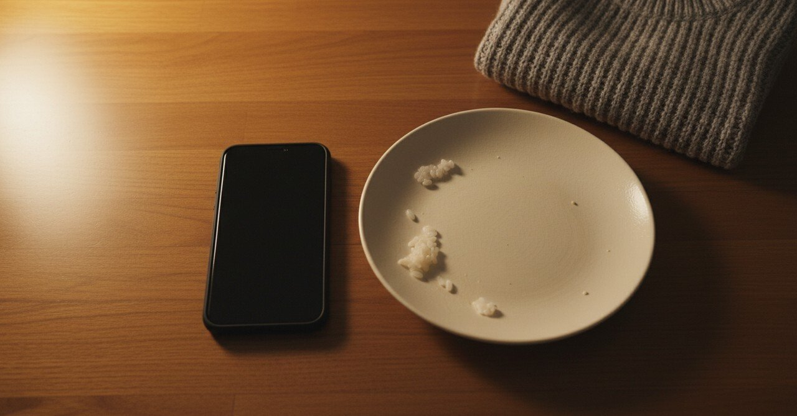

嫌いだったSNSを、自動化で消した夜

2026年4月18日、夜。長いあいだ嫌いだったSNSを、毎日触らずに済む仕組みに置き換えた。投稿は予約で動いて、反応の集計だけ週に一度届く。触らなくていい状態が、その夜にできた。
その日の現場
きっかけはその日の昼に新しい仕組みの作り方を学んだことだった。AIに役割を与えて、決まった作業を毎日やってもらう、という形のもの。「これ、自分の苦手を全部任せられるやつだ」と気づいて、夕方からはずっと組んでいた。
夜23時前に、X（旧Twitter）の投稿を予約で出して、反応の数だけを翌朝集める設計が動いた。 触らないで運用する、ができた瞬間だった。
並んでいたこと
その日は他に、衣替えをした。冬物のセーター3枚を圧縮袋に入れて、夏物のTシャツ7枚をハンガーに掛け直した。袋の中の空気を抜くたびに、首の後ろが少しぴしっとした。 夜は近所の回転寿司に行って、いか・しめさば・たまご・たまご・たまごの5皿を食べて、税込み660円だった。 寿司を食べながら、SNSのアプリをスマホから消すかどうか考えていた。
家に戻って、組み終わってから、消した。
触らなくていい、を作る理由
私はSNSを「使う」のが苦手だった。受動的に開いて時間を吸われて、自分の状態が悪くなることが何度もあった。 やめれば済む話なのに、やめなかった。理由は、続けたほうが良いと言われていたから。続けたい気持ちより、続けるべきという理屈のほうが強かった。
その夜の仕組みは、続けるべきの部分だけを引き継いで、続けたくない部分を消した。 私が触らなくても、その役は誰か（私の場合はAI）がやってくれる。私の時間と心は、別の場所に回せる。
まだ続いていること
完成じゃない。投稿の中身は時々ズレるし、反応の集計の見方もまだ慣れない。 でも、毎日アプリを開かなくていい、という状態だけは1週間続いている。1週間続いたら、たぶんこれは続く。
衣替えしたTシャツも、もう半袖で過ごせる季節になっている。SNSを触らなくなった私は、まだ少し手持ち無沙汰だ。何をするかは、これから見つける。